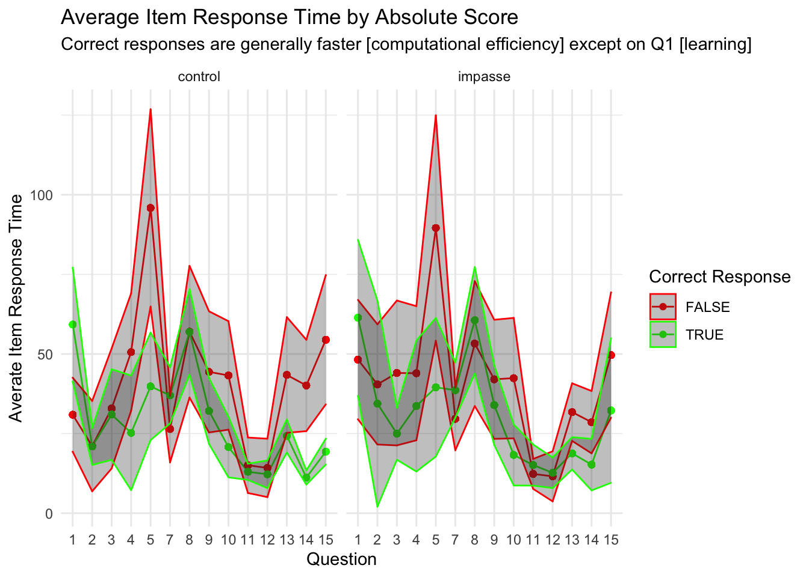

#IMPORT DATA df_items <-read_rds('data/2-scored-data/sgc3a_scored_items.rds')df_subjects <-read_rds('data/2-scored-data/sgc3a_scored_participants.rds') #SEPARATE ITEM DATA BY QUESTION TYPEdf_scaffold <- df_items %>%filter(q <6)df_test <- df_items %>%filter(q >6) %>%filter (q %nin%c(6,9))df_nondiscrim <- df_items %>%filter (q %in%c(6,9))
3.1 SAMPLE
3.1.1 Data Collection
Data was initially collected (in person, SONA groups in computer lab) in Fall 2017. In Spring 2018, additional data were collected after small modifications were made to the experimental platform to increase the size of multiple-choice input buttons, and to add an additional free-response question following the main task block. In Fall 2021, the study was replicated using asynchronous, online SONA pool, with additional participants collected in Winter 2022.
CODE
title ="Participants by Condition and Data Collection Period"cols =c("Control Condition","Impasse Condition","Total for Period")cont <-table(df_subjects$term, df_subjects$condition)cont %>%addmargins() %>%kbl(caption = title, col.names = cols) %>%kable_classic()
Participants by Condition and Data Collection Period
Descriptive Statistics of Participant Age and Gender
min
Q1
median
Q3
max
mean
sd
n
missing
female
lab
18
19
20
21
33
20.4
2.12
126
0
78
online
18
20
20
21
31
20.6
2.00
204
0
137
For in-person collection, 126 participants (60 % female ) undergraduate STEM majors at a public American University participated in person in exchange for course credit (age: 18 - 33 years). Participants were randomly assigned to one of two experimental groups.
For online replication 204 participants (70 % female ) undergraduate STEM majors at a public American University participated online, asynchronously in exchange for course credit (age: 18 - 31 years). Participants were randomly assigned to one of two experimental groups.
3.2 RESPONSE ACCURACY
3.2.1 Total Scores
Total scores indicate the response accuracy by a particular participant across all discriminant items (n=13) in the graph comprehension task.
3.2.1.1 Total Absolute Score
Recall from Section 2.1.2.1 that the absolute score (following the dichotomous scoring approach) s_NABS indicates if the subject’s response for a particular item was perfectly correct: whether they selected all correct answer options and no others (excluding certain allowed exceptions, such as also selecting the data point referenced in the question). The absolute score for an individual item is either 0 or 1. When summarized across the entire set of discriminant items, the cumulative absolute score for an individual subject ranges from [0,13].
Descriptive Statistics of Response Accuracy (Total Absolute Score)
min
Q1
median
Q3
max
mean
sd
n
missing
lab
0
0
1
9.00
13
4.11
5.09
126
0
online
0
0
1
8.00
13
3.52
4.89
204
0
combined
0
0
1
8.75
13
3.75
4.97
330
0
For in person collection, total absolute scores (n = 126) range from 0 to 13 with a mean score of (M = 4.11, SD = 5.09).
For online replication, (online) total absolute accuracy scores (n = 204) range from 0 to 13 with a slightly lower mean score of (M = 3.52, SD = 4.89).
When combined overall, total absolute accuracy scores (n = 330) range from 0 to 13 with a slightly lower mean score of (M = 3.75, SD = 4.97).
CODE
#GGFORMULA | DENSITY HISTOGRAM SUBJECT TOTAL ABSOLUTEgf_density(~s_NABS, data = df_subjects) +labs(x ="number of correct responses",y ="% of subjects",title ="Distribution of Subject Total Absolute Score",subtitle ="Modes at high and low ends of scale suggest concentration of high (vs) low understanding") +theme_minimal()
CODE
##GGPUBR | HIST+DENSITY SCORE BY CONDITION/MODEp <-gghistogram(df_subjects, x ="s_NABS", binwidth =1,add ="mean", rug =TRUE,fill ="pretty_condition", #, palette = c("#00AFBB", "#E7B800"),add_density =TRUE) facet(p, facet.by=c("pretty_condition","mode")) +labs( title ="Distribution of Total Absolute Score (by Mode and Condition)",subtitle ="Pattern of response is the same across data collection modes but differs by condition",x ="Total Absolute Score", y ="number of participants") +theme_minimal() +theme(legend.position ="blank")
CODE
##GGFORMULA | HIST+DENSITY SCORE BY CONDITION/MODE# stats = df_subjects %>% group_by(condition, mode) %>% dplyr::summarise(mean = mean(s_ABS))# gf_density(~s_ABS, data = df_subjects) %>% # gf_facet_grid(condition~mode, labeller = label_both) %>% # gf_lims(x = c(0, 13)) %>% # gf_vline(data = stats, xintercept = ~mean, color = "red") +# labs(x = "total number correct ",# y = "proportion of subjects",# title = "Distribution of Total Score (by Modality and Condition)",# subtitle = "Score distributions are comparable across experiment modalities, but differ by conditions") + # theme_minimal()
Visual inspection of this distribution suggests it is not normal, and perhaps perhaps bimodal. We verify this via an excess mass test (Ameijeiras-Alsonso et. al 2018). TODO REFERENCE
CODE
multimode::modetest(df_subjects$s_NABS)
Warning in multimode::modetest(df_subjects$s_NABS): A modification of the data
was made in order to compute the excess mass or the dip statistic
Ameijeiras-Alonso et al. (2019) excess mass test
data: df_subjects$s_NABS
Excess mass = 0.1, p-value <2e-16
alternative hypothesis: true number of modes is greater than 1
Warning in multimode::locmodes(df_subjects$s_NABS, mod0 = n_modes, display =
TRUE): If the density function has an unbounded support, artificial modes may
have been created in the tails
The excess mass test for multimodality suggests the distribution is infact multimodal (m = 0.1, p < 0.001), with two identifiable modes at 0.26 and 12.261, and an antimode at 6.985.
But what kind of distribution is this data? Next, we use the fitdistrplus package to compare the distribution of this variable to a variety of probability distribution families. First, we transform the # correct items to % correct items by dividing it by the total number of items (n = 13).
CODE
#describe the distributiondescdist(data = df_subjects$DV_percent_NABS, discrete =FALSE, boot =1000)
Fitting of the distribution ' beta ' by matching moments
Parameters :
estimate
shape1 0.118
shape2 0.291
Loglikelihood: Inf AIC: -Inf BIC: -Inf
Interpreting the Cullen and Frey graph, it appears that number total number of correct responses per subject may follow a beta distribution.
Infact, if we fit this variable using both a normal and beta distribution (using method of moments), it appears that the beta distribution provides a much better fit. The parameter estimates for the beta distribution are: shape1 = 0.118, shape2 = 0.291 (note: I assume fitdistrplus transforms the variable )
Note
Condition appears to exert a positive influence on Cumulative Absolute Score across data collection modalities.
3.2.1.2 Total Scaled Scores
The total scaled score s_SCALED summarizes the scaled score on the 13 strategy-discriminant questions, for each subject. This score ranges from from -13 (all orthogonal) to 13 (all triangular). Recall that the s_SCALED score for an item is a numeric representation of the strategy-consistent response, scaled from -1 to +1 (see Section 2.2.4)
Most importantly, the Scaled score gives us a way of quantitatively examining how correctly a participant interpreted the coordinate system across the entire set of items. It offers a more nuanced look into performance than absolute score.
Descriptive Statistics of Response Accuracy (Total Scaled Score)
min
Q1
median
Q3
max
mean
sd
n
missing
lab
-13
-12.0
-7.5
8.75
13
-2.68
10.10
126
0
online
-13
-10.0
-7.0
6.62
13
-2.83
9.25
204
0
combined
-13
-10.5
-7.0
7.50
13
-2.77
9.57
330
0
For in person collection, total scaled scores (n = 126) range from -13 to 13 with a mean score of (M = -2.68, SD = 10.1).
For online replication, total scaled scores (n = 204) range from -13 to 13 with a slightly lower mean score of (M = -2.83, SD = 9.25).
When combined overall, total scaled scores (n = 330) range from -13 to 13 with a slightly lower mean score of (M = -2.77, SD = 9.57).
CODE
#GGFORMULA | DENSITY HISTOGRAM SUBJECT TOTAL SCALEDgf_density(~s_SCALED, data = df_subjects) +labs(x ="total scaled score",y ="% of subjects",title ="Distribution of Subject Total Scaled Score",subtitle ="Modes at high and low ends of scale suggest concentration of high (vs) low understanding") +theme_minimal()
CODE
##GGPUBR | HIST+DENSITY SCORE BY CONDITION/MODEp <-gghistogram(df_subjects, x ="s_SCALED",binwidth=1,add ="mean", rug =TRUE,fill ="pretty_condition", #, palette = c("#00AFBB", "#E7B800"),add_density =TRUE) facet(p, facet.by=c("pretty_condition","mode")) +labs( title ="Distribution of Total Scaled Score (by Condition and Mode)",subtitle ="Pattern of response is similar across data collection modes but differs by condition",x ="total scaled score", y ="number of participants") +theme_minimal() +theme(legend.position ="blank")
CODE
##GGFORMULA | HIST+DENSITY SCORE BY CONDITION/MODE# stats = df_subjects %>% group_by(pretty_condition, mode) %>% dplyr::summarise(mean = mean(s_SCALED))# gf_density(~s_SCALED, data = df_subjects) %>%# gf_facet_grid(pretty_condition~mode) %>%# gf_lims(x = c(-13, 13)) %>%# gf_vline(data = stats, xintercept = ~mean, color = "red") +# labs(x = "total number correct ",# y = "proportion of subjects",# title = "Distribution of Scaled Score (by Modality and Condition)",# subtitle = "Score distributions are similar across experiment modalities, but differ by conditions") +# theme_minimal()
Visual inspection of this distribution suggests it is not normal, and perhaps perhaps bimodal. We verify this via an excess mass test (Ameijeiras-Alsonso et. al 2018).
CODE
multimode::modetest(df_subjects$s_SCALED)
Warning in multimode::modetest(df_subjects$s_SCALED): A modification of the data
was made in order to compute the excess mass or the dip statistic
Ameijeiras-Alonso et al. (2019) excess mass test
data: df_subjects$s_SCALED
Excess mass = 0.1, p-value <2e-16
alternative hypothesis: true number of modes is greater than 1
Warning in multimode::locmodes(df_subjects$s_SCALED, mod0 = n_modes, display =
TRUE): If the density function has an unbounded support, artificial modes may
have been created in the tails
The excess mass test for multimodality suggests the distribution is in fact multimodal (m = 0.1, p < 0.001), with two identifiable modes at -11.226 and 12.127, and an antimode at 2.941.
Note
Condition appears to exert a positive influence on Scaled Score across data collection modalities.
3.2.1.3 Total Interpretations
Next we consider the the interpretations assigned to each response.
CODE
title ="Proportion of Interpretations Across Items Items By Condition (Lab)"item.contingency <- df_items %>%filter(mode =="lab-synch") %>% dplyr::select(interpretation, pretty_condition) %>%table() %>%prop.table() %>%addmargins()item.contingency %>%kbl (caption = title) %>%kable_classic()
Proportion of Interpretations Across Items Items By Condition (Lab)
control
impasse
Sum
Orthogonal
0.297
0.116
0.414
Satisfice
0.000
0.028
0.028
frenzy
0.002
0.005
0.007
?
0.025
0.054
0.079
reference
0.001
0.004
0.005
blank
0.008
0.034
0.042
both tri + orth
0.061
0.056
0.116
Tversky
0.004
0.017
0.021
Triangular
0.094
0.195
0.288
Sum
0.492
0.508
1.000
CODE
title ="Proportion of Interpretations Across Items Items By Condition (Online)"item.contingency <- df_items %>%filter(mode =="asynch") %>% dplyr::select(interpretation, pretty_condition) %>%table() %>%prop.table() %>%addmargins()item.contingency %>%kbl (caption = title) %>%kable_classic()
Proportion of Interpretations Across Items Items By Condition (Online)
control
impasse
Sum
Orthogonal
0.260
0.122
0.382
Satisfice
0.000
0.024
0.024
frenzy
0.002
0.001
0.003
?
0.050
0.066
0.116
reference
0.000
0.002
0.002
blank
0.013
0.055
0.068
both tri + orth
0.056
0.061
0.118
Tversky
0.011
0.023
0.035
Triangular
0.078
0.175
0.253
Sum
0.471
0.529
1.000
CODE
title ="Proportion of Interpretations Across Items Items By Condition (Combined)"item.contingency <- df_items %>% dplyr::select(interpretation, pretty_condition) %>%table() %>%prop.table() %>%addmargins()item.contingency %>%kbl (caption = title) %>%kable_classic()
Proportion of Interpretations Across Items Items By Condition (Combined)
control
impasse
Sum
Orthogonal
0.274
0.120
0.394
Satisfice
0.000
0.025
0.025
frenzy
0.002
0.003
0.004
?
0.040
0.061
0.102
reference
0.001
0.002
0.003
blank
0.011
0.047
0.058
both tri + orth
0.058
0.059
0.117
Tversky
0.009
0.021
0.029
Triangular
0.084
0.183
0.267
Sum
0.479
0.521
1.000
CODE
#PROPORTIONAL BAR CHARTgf_propsh(~interpretation, data = df_items, fill =~pretty_condition) %>%gf_facet_grid(mode~pretty_condition, labeller = label_both) +labs(x ="% of items",title ="Proportion of Interpretations Across Items",subtitle="Impasse Condition yields shift from Orthogonal to alternative interpretations")+theme_minimal()+theme(legend.position ="none")
Next we consider the response accuracy on just the first question of the graph comprehension task: a subject’s first exposure to the TM graph.
3.2.2.1 First Item Absolute Score
Next we consider the absolute score assigned the first response.
CODE
title ="Proportion of Correct Response on First Item (Lab)"item.contingency <- df_subjects %>%filter(mode =="lab-synch") %>% dplyr::select(item_q1_NABS, pretty_condition) %>%table() %>%prop.table() %>%addmargins()item.contingency %>%kbl (caption = title) %>%kable_classic()
Proportion of Correct Response on First Item (Lab)
control
impasse
Sum
0
0.413
0.357
0.77
1
0.079
0.151
0.23
Sum
0.492
0.508
1.00
CODE
title ="Proportion of Correct Response on First Item (Online)"item.contingency <- df_subjects %>%filter(mode =="asynch") %>% dplyr::select(item_q1_NABS, pretty_condition) %>%table() %>%prop.table() %>%addmargins()item.contingency %>%kbl (caption = title) %>%kable_classic()
Proportion of Correct Response on First Item (Online)
control
impasse
Sum
0
0.412
0.382
0.794
1
0.059
0.147
0.206
Sum
0.471
0.529
1.000
CODE
title ="Proportion of Correct Response on First Item (Combined)"item.contingency <- df_subjects %>% dplyr::select(item_q1_NABS, pretty_condition) %>%table() %>%prop.table() %>%addmargins()item.contingency %>%kbl (caption = title) %>%kable_classic()
Proportion of Correct Response on First Item (Combined)
control
impasse
Sum
0
0.412
0.373
0.785
1
0.067
0.148
0.215
Sum
0.479
0.521
1.000
CODE
#PROPORTIONAL BAR CHARTgf_props(~item_q1_NABS, data = df_subjects) +labs(x ="response accuracy",y ="% subjects",title ="Proportion of Correct Responses on First Item",subtitle="")+theme_minimal()+theme(legend.position ="none")
CODE
#PROPORTIONAL BAR CHARTgf_props(~item_q1_NABS, data = df_subjects, fill =~pretty_condition) %>%gf_facet_grid(mode~pretty_condition, labeller = label_both) +labs(x ="% of items",title ="Proportion of Correct Responses on First Item (by Modality and Condition)",subtitle="")+theme_minimal()+theme(legend.position ="none")
CODE
#MOSAIC PLOTvcd::mosaic(main="Proportion of Correct Responses on First Item",data = df_subjects, pretty_condition ~ item_q1_NABS, rot_labels=c(0,90,0,0), offset_varnames =c(left =4.5), offset_labels =c(left =-0.5),just_labels ="right",spacing =spacing_dimequal(unit(1:2, "lines")))
3.2.2.2 First Item Scaled Score
At the item level, the scaled score gives us a numeric measure of correctness of interpretation, ranging from -1 to 1. (note: we evaluate scaled_score on the first item rather than interpretation, because no orthogonal interpretation is available in the impasse condition)
Descriptive Statistics of Response Accuracy (First Item Scaled Score)
min
Q1
median
Q3
max
mean
sd
n
missing
lab
-1
-1
-1
0.5
1
-0.290
0.852
126
0
online
-1
-1
-1
0.5
1
-0.287
0.812
204
0
combined
-1
-1
-1
0.5
1
-0.288
0.826
330
0
For in person collection, first item scaled scores (n = 126) range from -1 to 1 with a mean score of (M = -0.29, SD = 0.85).
For online replication, (online) first item scaled scores (n = 204) range from -1 to 1 with a slightly lower mean score of (M = -0.29, SD = 0.81).
When combined overall, first item scaled scores (n = 330) range from -1 to 1 with a slightly lower mean score of (M = -0.29, SD = 0.83).
CODE
#GGFORMULA | PROPORTIONAL HISTOGRAM SUBJECT FIRST SCALEDgf_props(~item_q1_SCALED, data = df_subjects) +labs(x ="scaled score (first item)",y ="% of subjects",title ="Distribution of First Item Scaled Score",subtitle ="") +theme_minimal()
CODE
##GGPUBR | HIST+DENSITY SCORE BY CONDITION/MODEp <-gghistogram(df_subjects, x ="item_q1_SCALED", binwidth =0.5,add ="mean", rug =TRUE,fill ="pretty_condition", #, palette = c("#00AFBB", "#E7B800"),add_density =TRUE) facet(p, facet.by=c("pretty_condition","mode")) +labs( title ="Distribution of First Item Scaled Score (by Mode and Condition)",subtitle ="Pattern of response is the same across data collection modes but differs by condition",x ="scaled score (firt item) ", y ="number of participants") +theme_minimal() +theme(legend.position ="blank")
CODE
##GGFORMULA | HIST+DENSITY SCORE BY CONDITION/MODE# stats = df_subjects %>% group_by(pretty_condition, mode) %>% dplyr::summarise(mean = mean(item_q1_SCALED))# gf_density(~item_q1_SCALED, data = df_subjects) %>%# gf_facet_grid(pretty_condition~mode, labeller = label_both) %>%# gf_lims(x = c(-1, 1)) %>%# gf_vline(data = stats, xintercept = ~mean, color = "red") +# labs( title = "Distribution of First Item Scaled Score (by Mode and Condition)",# subtitle ="Pattern of response is the same across data collection modes but differs by condition",# x = "scaled score (firt item) ", y = "number of participants") + # theme_minimal()
CODE
#VISUALIZE distribution of response accuracy across ITEMS#HISTOGRAMstats = df_items %>%group_by(condition, mode) %>% dplyr::summarise(mean =mean(score_SCALED))gf_density(~score_SCALED, data = df_items) %>%gf_facet_grid(condition~mode, labeller = label_both) %>%gf_vline(data = stats, xintercept =~mean, color ="red") +labs(x ="Scaled Score for Item",y ="Proportion of Items",title ="Distribution of Accuracy per Item (Scale Score)",subtitle="The impasse condition shifts density toward the positive score")+theme_minimal()
3.3 RESPONSE LATENCY
TODO: Investigate super high and super low response times..
TODO: Investigate appropriate models for response time data. (see: https://lindeloev.github.io/shiny-rt/).
Especially see https://lindeloev.github.io/shiny-rt/ for ideas on modelling reaction time data
3.3.1 Time on Study
CODE
#DESCRIBE distribution of response timetime.stats <-rbind("lab"= df_subjects %>%filter(mode =='lab-synch') %>% dplyr::select(totaltime_m) %>%unlist() %>%favstats(),"online"= df_subjects %>%filter(mode =='asynch') %>% dplyr::select(totaltime_m) %>%unlist() %>%favstats())title ="Descriptive Statistics of Response Latency (Time on Study)"time.stats %>%kbl(caption = title) %>%kable_classic()
Descriptive Statistics of Response Latency (Time on Study)
min
Q1
median
Q3
max
mean
sd
n
missing
lab
6.01
10.50
12.2
14.4
23.9
12.8
3.37
126
0
online
2.91
9.18
11.5
15.0
111.0
13.4
9.21
204
0
Total time on study for in person subjects (n = 126) ranged from 6.01 to 23.86 minutes with a mean duration of (M = 12.8, SD = 3.37).
Total time on study for online replication subjects (n = 204) ranged from 2.91 to 111.02 minutes with a mean duration of (M = 13.37, SD = 9.21).
CODE
#VISUALIZE distribution of response timeplab <-gf_dhistogram(~totaltime_m, data = df_subjects) %>%gf_vline(xintercept =~time.stats["lab",]$mean, color ="black") %>%gf_fitdistr(dist="gamma", color="red")+labs(title="Lab", x ="Total Time (mins)", y ="% subjects") +theme_minimal()ponline <-gf_dhistogram(~totaltime_m, data = df_subjects) %>%gf_vline(xintercept =~time.stats["online",]$mean, color ="black") %>%gf_fitdistr(dist ="gamma", color="red")+labs(title="Online", x ="Total Time (mins)", y ="% subjects") +theme_minimal()plot <-ggarrange(plab, ponline, common.legend =TRUE, nrow =1, ncol =2)annotate_figure(plot, top =text_grob("Total Time by Study Mode",color ="black", face ="bold", size =14),bottom =text_grob("fit by Gamma distribution", face ="italic", size =10))
TODO consider log transform of response latency datasee archive sgc3A_participants.Rmd
3.3.2 Time on Question
TODO time on question
3.4 DUE DILIGENCE
3.4.1 Data Collection Mode on Absolute Score
Does Mode Change Effect of Condition on Score?
To verify that the data collected in the lab and remotely online are comparable, we perform a t-test on group means of ABSOLUTE SCORE for each condition, and examine whether data collection modality is a significant predictor of variance in absolute score
CODE
paste("Two Sample T-Test for S_ABS LAB vs. ONLINE control condition")
[1] "Two Sample T-Test for S_ABS LAB vs. ONLINE control condition"
Welch Two Sample t-test
data: s_ABS by mode
t = 0.5, df = 120, p-value = 0.6
alternative hypothesis: true difference in means between group lab-synch and group asynch is not equal to 0
95 percent confidence interval:
-1.09 1.84
sample estimates:
mean in group lab-synch mean in group asynch
2.68 2.30
CODE
paste("Two Sample T-Test for S_ABS LAB vs. ONLINE impasse condition")
[1] "Two Sample T-Test for S_ABS LAB vs. ONLINE impasse condition"
Welch Two Sample t-test
data: s_ABS by mode
t = 1, df = 135, p-value = 0.3
alternative hypothesis: true difference in means between group lab-synch and group asynch is not equal to 0
95 percent confidence interval:
-0.727 2.435
sample estimates:
mean in group lab-synch mean in group asynch
5.44 4.58
CODE
paste("OLS Linear Regression Predicting Absolute Score by Data Collection Mode")
[1] "OLS Linear Regression Predicting Absolute Score by Data Collection Mode"
CODE
summary(lm(data = df_subjects, formula = s_ABS ~ mode ))
Call:
lm(formula = s_ABS ~ mode, data = df_subjects)
Residuals:
Min 1Q Median 3Q Max
-4.08 -3.51 -2.51 4.49 9.49
Coefficients:
Estimate Std. Error t value Pr(>|t|)
(Intercept) 4.08 0.44 9.27 <2e-16 ***
modeasynch -0.57 0.56 -1.02 0.31
---
Signif. codes: 0 '***' 0.001 '**' 0.01 '*' 0.05 '.' 0.1 ' ' 1
Residual standard error: 4.94 on 328 degrees of freedom
Multiple R-squared: 0.00314, Adjusted R-squared: 0.000105
F-statistic: 1.03 on 1 and 328 DF, p-value: 0.31
Both t-tests are non-significant with 95% confidence intervals including 0. Further, an OLS linear regression model predicting cumulative absolute score indicates that data collection mode is not a significant predictor, explaining only 0.01% of variance in absolute score, F(1,328) = 1.03, p > 0.05.
Decision
It is reasonable to infer that data from both in-person and remote studies arise from the same data generating process.
3.4.2 Data Collection Mode on Cumulative Score
Are the by-condition group means significantly different by data collection modality?
To verify that the data collected in the lab and remotely online are comparable, we perform a t-test on group means of SCALED SCORE for each condition.
CODE
paste("Two Sample T-Test for s_SCALED LAB vs. ONLINE control condition")
[1] "Two Sample T-Test for s_SCALED LAB vs. ONLINE control condition"
Welch Two Sample t-test
data: s_SCALED by mode
t = -0.08, df = 116, p-value = 0.9
alternative hypothesis: true difference in means between group lab-synch and group asynch is not equal to 0
95 percent confidence interval:
-3.13 2.88
sample estimates:
mean in group lab-synch mean in group asynch
-6.49 -6.36
CODE
paste("Two Sample T-Test for s_SCALED LAB vs. ONLINE impasse condition")
[1] "Two Sample T-Test for s_SCALED LAB vs. ONLINE impasse condition"
Welch Two Sample t-test
data: s_SCALED by mode
t = 0.5, df = 130, p-value = 0.6
alternative hypothesis: true difference in means between group lab-synch and group asynch is not equal to 0
95 percent confidence interval:
-2.09 3.48
sample estimates:
mean in group lab-synch mean in group asynch
1.008 0.315
CODE
paste("OLS Linear Regression Predicting Scaled Score by Data Collection Mode")
[1] "OLS Linear Regression Predicting Scaled Score by Data Collection Mode"
CODE
summary(lm(data = df_subjects, formula = s_SCALED ~ mode ))
Call:
lm(formula = s_SCALED ~ mode, data = df_subjects)
Residuals:
Min 1Q Median 3Q Max
-10.32 -7.82 -4.17 10.33 15.83
Coefficients:
Estimate Std. Error t value Pr(>|t|)
(Intercept) -2.683 0.854 -3.14 0.0018 **
modeasynch -0.146 1.086 -0.13 0.8932
---
Signif. codes: 0 '***' 0.001 '**' 0.01 '*' 0.05 '.' 0.1 ' ' 1
Residual standard error: 9.58 on 328 degrees of freedom
Multiple R-squared: 5.5e-05, Adjusted R-squared: -0.00299
F-statistic: 0.018 on 1 and 328 DF, p-value: 0.893
Both t-tests are non-significant with 95% confidence intervals including 0. Further, an OLS linear regression model predicting cumulative scaled score indicates that data collection mode is not a significant predictor, explaining less than 0.001% of variance in absolute score, F(1,328) = 0.0078, p > 0.05.
Decision
It is reasonable to infer that data from both in-person and remote studies arise from the same data generating process.
#RIDGEPLOT# ggplot(data = df_subjects, aes(x = s_NABS, y = mode)) +# geom_density_ridges() + xlim(0,13)+# facet_wrap(~condition, labeller = label_both) +# labs(x = "total number correct ",# y = "proportion of subjects",# title = "Subject Cumulative Score (Absolute)",# subtitle = "Score distributions are comparable across modalities and different across conditions") +# theme_minimal()
Item Absolute Score ::: {.cell}
CODE
x <- df_items %>%mutate(score =as.logical(score_ABS))title ="Proportion of Correct Items By Condition (Lab)"item.contingency <- df_items %>%filter(mode =="lab-synch") %>% dplyr::select(score_ABS, condition) %>%table() %>%prop.table() %>%addmargins()item.contingency %>%kbl (caption = title) %>%kable_classic()
Proportion of Correct Items By Condition (Lab)
111
121
Sum
0
0.344
0.268
0.613
1
0.148
0.240
0.387
Sum
0.492
0.508
1.000
CODE
title ="Proportion of Correct Items By Condition (Online)"item.contingency <- df_items %>%filter(mode =="asynch") %>% dplyr::select(score_ABS, condition) %>%table() %>%prop.table() %>%addmargins()item.contingency %>%kbl (caption = title) %>%kable_classic()
Proportion of Correct Items By Condition (Online)
111
121
Sum
0
0.342
0.307
0.649
1
0.128
0.223
0.351
Sum
0.471
0.529
1.000
:::
CODE
#VISUALIZE distribution of response accuracy across ITEMS#HISTOGRAMstats = df_items %>%group_by(condition, mode) %>% dplyr::summarise(mean =mean(score_niceABS))gf_props(~score_niceABS, data = df_items) %>%gf_facet_grid(condition~mode, labeller = label_both) +labs(x ="Item Absolute Score",title ="Item Absolute Score",subtitle="Across modalities, the impasse condition yielded more correct responses")+theme_minimal()
Item Scaled Score
At the item level, the scaled score gives us a numeric measure of correctness of interpretation, ranging from -1 to 1.
Descriptive Statistics of Item Response Accuracy (Scaled Score)
min
Q1
median
Q3
max
mean
sd
n
missing
lab
-1
-1
-0.5
1
1
-0.127
0.877
1890
0
online
-1
-1
-0.5
1
1
-0.136
0.842
3060
0
CODE
#VISUALIZE distribution of response accuracy across ITEMS#HISTOGRAMstats = df_items %>%group_by(condition, mode) %>% dplyr::summarise(mean =mean(score_SCALED))gf_density(~score_SCALED, data = df_items) %>%gf_facet_grid(condition~mode, labeller = label_both) %>%gf_vline(data = stats, xintercept =~mean, color ="red") +labs(x ="Scaled Score for Item",y ="Proportion of Items",title ="Distribution of Accuracy per Item (Scale Score)",subtitle="The impasse condition shifts density toward the positive score")+theme_minimal()

Source Code
---subtitle: 'Study SGC3A | 3 Description'---\newpage# Description {#sec-SGC3A-description}**TODO**- finish description of latency- consider raincloud/boxplots/violins with ggpubr/ggdist*The purpose of this notebook is describe the distributions of dependent variables for Study SGC3A.*+------------------------+| Pre-Requisite |+========================+| 1_sgc3A_harmonize.qmd\ || 2_sgc3A_scoring.qmd |+------------------------+```{r}#| label: SETUP#| warning : false#| message : falselibrary(Hmisc) # %nin% operatorlibrary(mosaic) #simple descriptives [favstats]library(multimode) #test for multimodalitylibrary(fitdistrplus) #fitting distributionslibrary(performance) #multimodalitylibrary(kableExtra) #printing tables library(vcd) #mosaicplotslibrary(ggpubr) #arrange plotslibrary(tidyverse) #ALL THE THINGS#OUTPUT OPTIONSlibrary(dplyr, warn.conflicts =FALSE)options(dplyr.summarise.inform =FALSE)options(ggplot2.summarise.inform =FALSE)options(scipen=1, digits=3)``````{r}#| label: IMPORT-DATA#| warning : false#| message : false#IMPORT DATA df_items <-read_rds('data/2-scored-data/sgc3a_scored_items.rds')df_subjects <-read_rds('data/2-scored-data/sgc3a_scored_participants.rds') #SEPARATE ITEM DATA BY QUESTION TYPEdf_scaffold <- df_items %>%filter(q <6)df_test <- df_items %>%filter(q >6) %>%filter (q %nin%c(6,9))df_nondiscrim <- df_items %>%filter (q %in%c(6,9))```## SAMPLE### Data CollectionData was initially collected (in person, SONA groups in computer lab) in Fall 2017. In Spring 2018, additional data were collected after small modifications were made to the experimental platform to increase the size of multiple-choice input buttons, and to add an additional free-response question following the main task block. In Fall 2021, the study was replicated using asynchronous, online SONA pool, with additional participants collected in Winter 2022.```{r}#| label : INSPECT-DATA-COLLECTIONtitle ="Participants by Condition and Data Collection Period"cols =c("Control Condition","Impasse Condition","Total for Period")cont <-table(df_subjects$term, df_subjects$condition)cont %>%addmargins() %>%kbl(caption = title, col.names = cols) %>%kable_classic()```### Participants```{r}#| label: DESC-PARTICIPANTS#Describe participantssubject.stats <-rbind("lab"= df_subjects %>%filter(mode =='lab-synch') %>% dplyr::select(age) %>%unlist() %>%favstats(),"online"= df_subjects %>%filter(mode =="asynch") %>% dplyr::select(age) %>%unlist() %>%favstats()) subject.stats$female <-c( (df_subjects %>%filter(mode =='lab-synch') %>%filter(gender=="Female") %>%count())$n, (df_subjects %>%filter(mode =="asynch") %>%filter(gender=="Female") %>%count())$n)title ="Descriptive Statistics of Participant Age and Gender"subject.stats %>%kbl (caption = title) %>%kable_classic()```For **in-person** collection, `r subject.stats["lab",]$n` participants (`r round(subject.stats["lab",]$female/subject.stats["lab",]$n,1) * 100` % female ) undergraduate STEM majors at a public American University participated *in person* in exchange for course credit (age: `r (subject.stats['lab','min'])` - `r (subject.stats['lab','max'])` years). Participants were randomly assigned to one of two experimental groups.For **online replication** `r subject.stats["online",]$n` participants (`r round(subject.stats["online",]$female/subject.stats["online",]$n,1) * 100` % female ) undergraduate STEM majors at a public American University participated *online, asynchronously* in exchange for course credit (age: `r (subject.stats['online','min'])` - `r (subject.stats['online','max'])` years). Participants were randomly assigned to one of two experimental groups.## RESPONSE ACCURACY### Total ScoresTotal scores indicate the response accuracy by a particular participant across all discriminant items (n=13) in the graph comprehension task.#### Total Absolute ScoreRecall from [Section -@sec-absolute-scoring] that the absolute score (following the dichotomous scoring approach) `s_NABS` indicates if the subject's response for a particular item was *perfectly* correct: whether they selected all correct answer options and no others (excluding certain allowed exceptions, such as also selecting the data point referenced in the question). The absolute score for an individual item is either 0 or 1. When summarized across the entire set of discriminant items, the cumulative absolute score for an individual subject ranges from \[0,13\].```{r}#| label: DESC-SUBJ-ABStitle ="Descriptive Statistics of Response Accuracy (Total Absolute Score)"abs.stats <-rbind("lab"= df_subjects %>%filter(mode =='lab-synch') %>% dplyr::select(s_NABS) %>%unlist() %>%favstats(),"online"= df_subjects %>%filter(mode =="asynch") %>% dplyr::select(s_NABS) %>%unlist() %>%favstats(),"combined"= df_subjects %>% dplyr::select(s_NABS) %>%unlist() %>%favstats()) abs.stats %>%kbl (caption = title) %>%kable_classic()```For *in person* collection, total absolute scores (n = `r abs.stats["lab",]$n`) range from `r round(abs.stats["lab",]$min,2)` to `r round(abs.stats["lab",]$max,2)` with a mean score of (M = `r round(abs.stats["lab",]$mean,2)`, SD = `r round(abs.stats["lab",]$sd,2)`).For *online replication*, (online) total absolute accuracy scores (n = `r abs.stats["online",]$n`) range from `r round(abs.stats["online",]$min,2)` to `r round(abs.stats["online",]$max,2)` with a slightly lower mean score of (M = `r round(abs.stats["online",]$mean,2)`, SD = `r round(abs.stats["online",]$sd,2)`).When combined *overall*, total absolute accuracy scores (n = `r abs.stats["combined",]$n`) range from `r round(abs.stats["combined",]$min,2)` to `r round(abs.stats["combined",]$max,2)` with a slightly lower mean score of (M = `r round(abs.stats["combined",]$mean,2)`, SD = `r round(abs.stats["combined",]$sd,2)`).```{r}#| label: VIS-SUBJ-ABS#GGFORMULA | DENSITY HISTOGRAM SUBJECT TOTAL ABSOLUTEgf_density(~s_NABS, data = df_subjects) +labs(x ="number of correct responses",y ="% of subjects",title ="Distribution of Subject Total Absolute Score",subtitle ="Modes at high and low ends of scale suggest concentration of high (vs) low understanding") +theme_minimal()##GGPUBR | HIST+DENSITY SCORE BY CONDITION/MODEp <-gghistogram(df_subjects, x ="s_NABS", binwidth =1,add ="mean", rug =TRUE,fill ="pretty_condition", #, palette = c("#00AFBB", "#E7B800"),add_density =TRUE) facet(p, facet.by=c("pretty_condition","mode")) +labs( title ="Distribution of Total Absolute Score (by Mode and Condition)",subtitle ="Pattern of response is the same across data collection modes but differs by condition",x ="Total Absolute Score", y ="number of participants") +theme_minimal() +theme(legend.position ="blank") ##GGFORMULA | HIST+DENSITY SCORE BY CONDITION/MODE# stats = df_subjects %>% group_by(condition, mode) %>% dplyr::summarise(mean = mean(s_ABS))# gf_density(~s_ABS, data = df_subjects) %>% # gf_facet_grid(condition~mode, labeller = label_both) %>% # gf_lims(x = c(0, 13)) %>% # gf_vline(data = stats, xintercept = ~mean, color = "red") +# labs(x = "total number correct ",# y = "proportion of subjects",# title = "Distribution of Total Score (by Modality and Condition)",# subtitle = "Score distributions are comparable across experiment modalities, but differ by conditions") + # theme_minimal()```Visual inspection of this distribution suggests it is not normal, and perhaps perhaps bimodal. We verify this via an excess mass test (Ameijeiras-Alsonso et. al 2018). TODO REFERENCE```{r}#| label: CHECK-SUBJ-ABSmultimode::modetest(df_subjects$s_NABS)n_modes = multimode::nmodes(df_subjects$s_NABS, bw=2) #bw = 2questions/15 = 0.15%l_modes = multimode::locmodes(df_subjects$s_NABS,mod0 = n_modes, display =TRUE)```The excess mass test for multimodality suggests the distribution is infact multimodal (m = 0.1, p \< 0.001), with two identifiable modes at `r l_modes$location[1]` and `r l_modes$location[3]`, and an antimode at `r l_modes$location[2]`.But what kind of distribution is this data? Next, we use the `fitdistrplus` package to compare the distribution of this variable to a variety of probability distribution families. First, we transform the \# correct items to % correct items by dividing it by the total number of items (n = 13).```{r}#| label: FIT-DIST-TOTAL-ABS#describe the distributiondescdist(data = df_subjects$DV_percent_NABS, discrete =FALSE, boot =1000)print("FIT A NORMAL DISTRIBUTION")normal_ =fitdist(df_subjects$DV_percent_NABS,"norm")plot(normal_)print("FIT A BETA DISTRIBUTION")beta_ =fitdist(df_subjects$DV_percent_NABS,"beta", method="mme" )plot(beta_)summary(beta_)```Interpreting the Cullen and Frey graph, it *appears* that number total number of correct responses per subject may follow a beta distribution.Infact, if we fit this variable using both a normal and beta distribution (using method of moments), it appears that the beta distribution provides a much better fit. The parameter estimates for the beta distribution are: shape1 = `r beta_$estimate[1]`, shape2 = `r beta_$estimate[2]` (note: I assume `fitdistrplus` transforms the variable )::: callout-note**Condition appears to exert a positive influence on Cumulative Absolute Score across data collection modalities.**:::#### Total Scaled ScoresThe total scaled score `s_SCALED` summarizes the scaled score on the 13 strategy-discriminant questions, for each subject. This score ranges from from -13 (all orthogonal) to 13 (all triangular). Recall that the `s_SCALED` score for an item is a numeric representation of the strategy-consistent response, scaled from -1 to +1 (see [Section -@sec-SGC3A-scaledScore])Most importantly, the Scaled score gives us a way of quantitatively examining how correctly a participant interpreted the coordinate system across the entire set of items. It offers a more nuanced look into performance than absolute score. ```{r}#| label: DESC-SUBJ-SCALEDtitle ="Descriptive Statistics of Response Accuracy (Total Scaled Score)"scaled.stats <-rbind("lab"= df_subjects %>%filter(mode =='lab-synch') %>% dplyr::select(s_SCALED) %>%unlist() %>%favstats(),"online"= df_subjects %>%filter(mode =="asynch") %>% dplyr::select(s_SCALED) %>%unlist() %>%favstats(),"combined"= df_subjects %>% dplyr::select(s_SCALED) %>%unlist() %>%favstats()) scaled.stats %>%kbl (caption = title) %>%kable_classic()```For **in person collection**, total scaled scores (n = `r scaled.stats["lab",]$n`) range from `r round(scaled.stats["lab",]$min,2)` to `r round(abs.stats["lab",]$max,2)` with a mean score of (M = `r round(scaled.stats["lab",]$mean,2)`, SD = `r round(scaled.stats["lab",]$sd,2)`).For **online replication**, total scaled scores (n = `r scaled.stats["online",]$n`) range from `r round(scaled.stats["online",]$min,2)` to `r round(scaled.stats["online",]$max,2)` with a slightly lower mean score of (M = `r round(scaled.stats["online",]$mean,2)`, SD = `r round(scaled.stats["online",]$sd,2)`).When combined **overall**, total scaled scores (n = `r scaled.stats["combined",]$n`) range from `r round(scaled.stats["combined",]$min,2)` to `r round(scaled.stats["combined",]$max,2)` with a slightly lower mean score of (M = `r round(scaled.stats["combined",]$mean,2)`, SD = `r round(scaled.stats["combined",]$sd,2)`).```{r}#| label: VIS-SUBJ-SCALED#GGFORMULA | DENSITY HISTOGRAM SUBJECT TOTAL SCALEDgf_density(~s_SCALED, data = df_subjects) +labs(x ="total scaled score",y ="% of subjects",title ="Distribution of Subject Total Scaled Score",subtitle ="Modes at high and low ends of scale suggest concentration of high (vs) low understanding") +theme_minimal()##GGPUBR | HIST+DENSITY SCORE BY CONDITION/MODEp <-gghistogram(df_subjects, x ="s_SCALED",binwidth=1,add ="mean", rug =TRUE,fill ="pretty_condition", #, palette = c("#00AFBB", "#E7B800"),add_density =TRUE) facet(p, facet.by=c("pretty_condition","mode")) +labs( title ="Distribution of Total Scaled Score (by Condition and Mode)",subtitle ="Pattern of response is similar across data collection modes but differs by condition",x ="total scaled score", y ="number of participants") +theme_minimal() +theme(legend.position ="blank") ##GGFORMULA | HIST+DENSITY SCORE BY CONDITION/MODE# stats = df_subjects %>% group_by(pretty_condition, mode) %>% dplyr::summarise(mean = mean(s_SCALED))# gf_density(~s_SCALED, data = df_subjects) %>%# gf_facet_grid(pretty_condition~mode) %>%# gf_lims(x = c(-13, 13)) %>%# gf_vline(data = stats, xintercept = ~mean, color = "red") +# labs(x = "total number correct ",# y = "proportion of subjects",# title = "Distribution of Scaled Score (by Modality and Condition)",# subtitle = "Score distributions are similar across experiment modalities, but differ by conditions") +# theme_minimal()```Visual inspection of this distribution suggests it is not normal, and perhaps perhaps bimodal. We verify this via an excess mass test (Ameijeiras-Alsonso et. al 2018). ```{r}#| label: CHECK-SUBJ-SCALEDmultimode::modetest(df_subjects$s_SCALED)n_modes = multimode::nmodes(df_subjects$s_SCALED, bw=2) #bw = 2questions/15 = 0.15%l_modes = multimode::locmodes(df_subjects$s_SCALED,mod0 = n_modes, display =TRUE)```The excess mass test for multimodality suggests the distribution is in fact multimodal (m = 0.1, p \< 0.001), with two identifiable modes at `r l_modes$location[1]` and `r l_modes$location[3]`, and an antimode at `r l_modes$location[2]`.::: callout-note**Condition appears to exert a positive influence on Scaled Score across data collection modalities.**:::#### Total InterpretationsNext we consider the the interpretations assigned to each response.```{r}#| label: DESC-TOTAL-INTEPRETATIONStitle ="Proportion of Interpretations Across Items Items By Condition (Lab)"item.contingency <- df_items %>%filter(mode =="lab-synch") %>% dplyr::select(interpretation, pretty_condition) %>%table() %>%prop.table() %>%addmargins()item.contingency %>%kbl (caption = title) %>%kable_classic()title ="Proportion of Interpretations Across Items Items By Condition (Online)"item.contingency <- df_items %>%filter(mode =="asynch") %>% dplyr::select(interpretation, pretty_condition) %>%table() %>%prop.table() %>%addmargins()item.contingency %>%kbl (caption = title) %>%kable_classic()title ="Proportion of Interpretations Across Items Items By Condition (Combined)"item.contingency <- df_items %>% dplyr::select(interpretation, pretty_condition) %>%table() %>%prop.table() %>%addmargins()item.contingency %>%kbl (caption = title) %>%kable_classic()``````{r}#| label: VIS-ITEM-INTERPRETATION#PROPORTIONAL BAR CHARTgf_propsh(~interpretation, data = df_items, fill =~pretty_condition) %>%gf_facet_grid(mode~pretty_condition, labeller = label_both) +labs(x ="% of items",title ="Proportion of Interpretations Across Items",subtitle="Impasse Condition yields shift from Orthogonal to alternative interpretations")+theme_minimal()+theme(legend.position ="none")#MOSAIC PLOTvcd::mosaic(main="Proportion of Interpretations across Conditions",data = df_items, pretty_condition ~ interpretation, rot_labels=c(0,90,0,0), offset_varnames =c(left =4.5), offset_labels =c(left =-0.5),just_labels ="right",spacing =spacing_dimequal(unit(1:2, "lines"))) ```### First Item ScoresNext we consider the response accuracy on _just_ the first question of the graph comprehension task: a subject's first exposure to the TM graph. #### First Item Absolute ScoreNext we consider the absolute score assigned the first response.```{r}#| label: DESC-FIRST-ABSOLUTEtitle ="Proportion of Correct Response on First Item (Lab)"item.contingency <- df_subjects %>%filter(mode =="lab-synch") %>% dplyr::select(item_q1_NABS, pretty_condition) %>%table() %>%prop.table() %>%addmargins()item.contingency %>%kbl (caption = title) %>%kable_classic()title ="Proportion of Correct Response on First Item (Online)"item.contingency <- df_subjects %>%filter(mode =="asynch") %>% dplyr::select(item_q1_NABS, pretty_condition) %>%table() %>%prop.table() %>%addmargins()item.contingency %>%kbl (caption = title) %>%kable_classic()title ="Proportion of Correct Response on First Item (Combined)"item.contingency <- df_subjects %>% dplyr::select(item_q1_NABS, pretty_condition) %>%table() %>%prop.table() %>%addmargins()item.contingency %>%kbl (caption = title) %>%kable_classic()``````{r}#| label: VIS-FIRST-ABSOLUTE#PROPORTIONAL BAR CHARTgf_props(~item_q1_NABS, data = df_subjects) +labs(x ="response accuracy",y ="% subjects",title ="Proportion of Correct Responses on First Item",subtitle="")+theme_minimal()+theme(legend.position ="none")#PROPORTIONAL BAR CHARTgf_props(~item_q1_NABS, data = df_subjects, fill =~pretty_condition) %>%gf_facet_grid(mode~pretty_condition, labeller = label_both) +labs(x ="% of items",title ="Proportion of Correct Responses on First Item (by Modality and Condition)",subtitle="")+theme_minimal()+theme(legend.position ="none")#MOSAIC PLOTvcd::mosaic(main="Proportion of Correct Responses on First Item",data = df_subjects, pretty_condition ~ item_q1_NABS, rot_labels=c(0,90,0,0), offset_varnames =c(left =4.5), offset_labels =c(left =-0.5),just_labels ="right",spacing =spacing_dimequal(unit(1:2, "lines"))) ```#### First Item Scaled ScoreAt the item level, the scaled score gives us a numeric measure of correctness of interpretation, ranging from -1 to 1. (note: we evaluate scaled_score on the first item rather than interpretation, because no orthogonal interpretation is available in the impasse condition)```{r}#| label: DESC-FIRST-SCALEDtitle ="Descriptive Statistics of Response Accuracy (First Item Scaled Score)"firstscaled.stats <-rbind("lab"= df_subjects %>%filter(mode =='lab-synch') %>% dplyr::select(item_q1_SCALED) %>%unlist() %>%favstats(),"online"= df_subjects %>%filter(mode =="asynch") %>% dplyr::select(item_q1_SCALED) %>%unlist() %>%favstats(),"combined"= df_subjects %>% dplyr::select(item_q1_SCALED) %>%unlist() %>%favstats()) firstscaled.stats %>%kbl (caption = title) %>%kable_classic()```For **in person** collection, first item scaled scores (n = `r firstscaled.stats["lab",]$n`) range from `r round(firstscaled.stats["lab",]$min,2)` to `r round(firstscaled.stats["lab",]$max,2)` with a mean score of (M = `r round(firstscaled.stats["lab",]$mean,2)`, SD = `r round(firstscaled.stats["lab",]$sd,2)`).For **online replication**, (online) first item scaled scores (n = `r firstscaled.stats["online",]$n`) range from `r round(firstscaled.stats["online",]$min,2)` to `r round(firstscaled.stats["online",]$max,2)` with a slightly lower mean score of (M = `r round(firstscaled.stats["online",]$mean,2)`, SD = `r round(firstscaled.stats["online",]$sd,2)`).When combined **overall**, first item scaled scores (n = `r firstscaled.stats["combined",]$n`) range from `r round(firstscaled.stats["combined",]$min,2)` to `r round(firstscaled.stats["combined",]$max,2)` with a slightly lower mean score of (M = `r round(firstscaled.stats["combined",]$mean,2)`, SD = `r round(firstscaled.stats["combined",]$sd,2)`).```{r}#| label: VIS-FIRST-SCALED#GGFORMULA | PROPORTIONAL HISTOGRAM SUBJECT FIRST SCALEDgf_props(~item_q1_SCALED, data = df_subjects) +labs(x ="scaled score (first item)",y ="% of subjects",title ="Distribution of First Item Scaled Score",subtitle ="") +theme_minimal()##GGPUBR | HIST+DENSITY SCORE BY CONDITION/MODEp <-gghistogram(df_subjects, x ="item_q1_SCALED", binwidth =0.5,add ="mean", rug =TRUE,fill ="pretty_condition", #, palette = c("#00AFBB", "#E7B800"),add_density =TRUE) facet(p, facet.by=c("pretty_condition","mode")) +labs( title ="Distribution of First Item Scaled Score (by Mode and Condition)",subtitle ="Pattern of response is the same across data collection modes but differs by condition",x ="scaled score (firt item) ", y ="number of participants") +theme_minimal() +theme(legend.position ="blank") ##GGFORMULA | HIST+DENSITY SCORE BY CONDITION/MODE# stats = df_subjects %>% group_by(pretty_condition, mode) %>% dplyr::summarise(mean = mean(item_q1_SCALED))# gf_density(~item_q1_SCALED, data = df_subjects) %>%# gf_facet_grid(pretty_condition~mode, labeller = label_both) %>%# gf_lims(x = c(-1, 1)) %>%# gf_vline(data = stats, xintercept = ~mean, color = "red") +# labs( title = "Distribution of First Item Scaled Score (by Mode and Condition)",# subtitle ="Pattern of response is the same across data collection modes but differs by condition",# x = "scaled score (firt item) ", y = "number of participants") + # theme_minimal()``````{r}#| label: VIS-ITEM-SCALED#VISUALIZE distribution of response accuracy across ITEMS#HISTOGRAMstats = df_items %>%group_by(condition, mode) %>% dplyr::summarise(mean =mean(score_SCALED))gf_density(~score_SCALED, data = df_items) %>%gf_facet_grid(condition~mode, labeller = label_both) %>%gf_vline(data = stats, xintercept =~mean, color ="red") +labs(x ="Scaled Score for Item",y ="Proportion of Items",title ="Distribution of Accuracy per Item (Scale Score)",subtitle="The impasse condition shifts density toward the positive score")+theme_minimal()```## RESPONSE LATENCY- [TODO: Investigate super high and super low response times.]{style="color: red;"}.- [TODO: Investigate appropriate models for response time data. (see: https://lindeloev.github.io/shiny-rt/)]{style="color: red;"}.- Especially see https://lindeloev.github.io/shiny-rt/ for ideas on modelling reaction time data### Time on Study```{r DESCRIBE-TOTALTIME}#DESCRIBE distribution of response timetime.stats <-rbind("lab"= df_subjects %>%filter(mode =='lab-synch') %>% dplyr::select(totaltime_m) %>%unlist() %>%favstats(),"online"= df_subjects %>%filter(mode =='asynch') %>% dplyr::select(totaltime_m) %>%unlist() %>%favstats())title ="Descriptive Statistics of Response Latency (Time on Study)"time.stats %>%kbl(caption = title) %>%kable_classic()```Total time on study for *in person* subjects (n = `r time.stats["lab",]$n`) ranged from `r round(time.stats["lab",]$min,2)` to `r round(time.stats["lab",]$max,2)` minutes with a mean duration of (M = `r round(time.stats["lab",]$mean,2)`, SD = `r round(time.stats["lab",]$sd,2)`).Total time on study for *online replication* subjects (n = `r time.stats["online",]$n`) ranged from `r round(time.stats["online",]$min,2)` to `r round(time.stats["online",]$max,2)` minutes with a mean duration of (M = `r round(time.stats["online",]$mean,2)`, SD = `r round(time.stats["online",]$sd,2)`).```{r}#| label : VIS-TOTALTIME#| message : false#| warning : false#VISUALIZE distribution of response timeplab <-gf_dhistogram(~totaltime_m, data = df_subjects) %>%gf_vline(xintercept =~time.stats["lab",]$mean, color ="black") %>%gf_fitdistr(dist="gamma", color="red")+labs(title="Lab", x ="Total Time (mins)", y ="% subjects") +theme_minimal()ponline <-gf_dhistogram(~totaltime_m, data = df_subjects) %>%gf_vline(xintercept =~time.stats["online",]$mean, color ="black") %>%gf_fitdistr(dist ="gamma", color="red")+labs(title="Online", x ="Total Time (mins)", y ="% subjects") +theme_minimal()plot <-ggarrange(plab, ponline, common.legend =TRUE, nrow =1, ncol =2)annotate_figure(plot, top =text_grob("Total Time by Study Mode",color ="black", face ="bold", size =14),bottom =text_grob("fit by Gamma distribution", face ="italic", size =10))```**TODO consider log transform of response latency data** *see* archive sgc3A_participants.Rmd### Time on Question**TODO time on question**## DUE DILIGENCE### Data Collection Mode on Absolute Score**Does Mode Change Effect of Condition on Score?**To verify that the data collected in the lab and remotely online are comparable, we perform a t-test on group means of ABSOLUTE SCORE for each condition, and examine whether data collection modality is a significant predictor of variance in absolute score```{r}#| label : MODEL-ABSCORE-BY-MODALITYpaste("Two Sample T-Test for S_ABS LAB vs. ONLINE control condition")t.test(data = df_subjects %>%filter(condition ==111), s_ABS ~ mode )paste("Two Sample T-Test for S_ABS LAB vs. ONLINE impasse condition")t.test(data = df_subjects %>%filter(condition ==121), s_ABS ~ mode )paste("OLS Linear Regression Predicting Absolute Score by Data Collection Mode")summary(lm(data = df_subjects, formula = s_ABS ~ mode ))```Both t-tests are non-significant with 95% confidence intervals including 0. Further, an OLS linear regression model predicting cumulative absolute score indicates that data collection mode is not a significant predictor, explaining only 0.01% of variance in absolute score, F(1,328) = 1.03, p \> 0.05.::: callout-decision**It is reasonable to infer that data from both in-person and remote studies arise from the same data generating process.**:::### Data Collection Mode on Cumulative Score**Are the by-condition group means significantly different by data collection modality?**To verify that the data collected in the lab and remotely online are comparable, we perform a t-test on group means of SCALED SCORE for each condition.```{r}#| label : MODEL-SCALEDSCORE-BY-MODALITYpaste("Two Sample T-Test for s_SCALED LAB vs. ONLINE control condition")t.test(data = df_subjects %>%filter(condition ==111), s_SCALED ~ mode )paste("Two Sample T-Test for s_SCALED LAB vs. ONLINE impasse condition")t.test(data = df_subjects %>%filter(condition ==121), s_SCALED ~ mode )paste("OLS Linear Regression Predicting Scaled Score by Data Collection Mode")summary(lm(data = df_subjects, formula = s_SCALED ~ mode ))```Both t-tests are non-significant with 95% confidence intervals including 0. Further, an OLS linear regression model predicting cumulative scaled score indicates that data collection mode is not a significant predictor, explaining less than 0.001% of variance in absolute score, F(1,328) = 0.0078, p \> 0.05.::: callout-decision**It is reasonable to infer that data from both in-person and remote studies arise from the same data generating process.**:::## RESOURCES- https://rpkgs.datanovia.com/ggpubr/reference/index.html```{r}#| label: sessionsessionInfo()```## ARCHIVESample ridgeplot code```{r}#RIDGEPLOT# ggplot(data = df_subjects, aes(x = s_NABS, y = mode)) +# geom_density_ridges() + xlim(0,13)+# facet_wrap(~condition, labeller = label_both) +# labs(x = "total number correct ",# y = "proportion of subjects",# title = "Subject Cumulative Score (Absolute)",# subtitle = "Score distributions are comparable across modalities and different across conditions") +# theme_minimal()```**Item Absolute Score**```{r}x <- df_items %>%mutate(score =as.logical(score_ABS))title ="Proportion of Correct Items By Condition (Lab)"item.contingency <- df_items %>%filter(mode =="lab-synch") %>% dplyr::select(score_ABS, condition) %>%table() %>%prop.table() %>%addmargins()item.contingency %>%kbl (caption = title) %>%kable_classic()title ="Proportion of Correct Items By Condition (Online)"item.contingency <- df_items %>%filter(mode =="asynch") %>% dplyr::select(score_ABS, condition) %>%table() %>%prop.table() %>%addmargins()item.contingency %>%kbl (caption = title) %>%kable_classic()``````{r}#VISUALIZE distribution of response accuracy across ITEMS#HISTOGRAMstats = df_items %>%group_by(condition, mode) %>% dplyr::summarise(mean =mean(score_niceABS))gf_props(~score_niceABS, data = df_items) %>%gf_facet_grid(condition~mode, labeller = label_both) +labs(x ="Item Absolute Score",title ="Item Absolute Score",subtitle="Across modalities, the impasse condition yielded more correct responses")+theme_minimal()```**Item Scaled Score**At the item level, the scaled score gives us a numeric measure of correctness of interpretation, ranging from -1 to 1.```{r}title ="Descriptive Statistics of Item Response Accuracy (Scaled Score)"scaled.stats.items <-rbind("lab"= df_items %>%filter(mode =='lab-synch') %>% dplyr::select(score_SCALED) %>%unlist() %>%favstats(),"online"= df_items %>%filter(mode =="asynch") %>% dplyr::select(score_SCALED) %>%unlist() %>%favstats()) scaled.stats.items %>%kbl (caption = title) %>%kable_classic()``````{r}#VISUALIZE distribution of response accuracy across ITEMS#HISTOGRAMstats = df_items %>%group_by(condition, mode) %>% dplyr::summarise(mean =mean(score_SCALED))gf_density(~score_SCALED, data = df_items) %>%gf_facet_grid(condition~mode, labeller = label_both) %>%gf_vline(data = stats, xintercept =~mean, color ="red") +labs(x ="Scaled Score for Item",y ="Proportion of Items",title ="Distribution of Accuracy per Item (Scale Score)",subtitle="The impasse condition shifts density toward the positive score")+theme_minimal()```